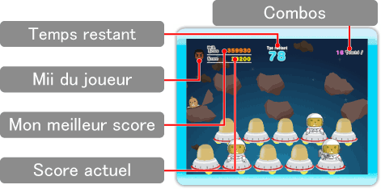
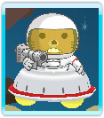
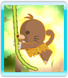
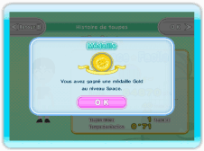

Écran de jeu

Niveaux et modes de difficulté
Ce jeu propose quatre niveaux et trois modes de difficulté qui se caractérisent par une limite de temps, une vitesse et un type de taupe différents. Au départ, seuls le niveau Jungle et le mode de difficulté Facile sont disponibles. Au fil du jeu, vous pourrez choisir d'autres niveaux et modes de difficulté.
Mode Coopération
Ce mode permet à deux personnes de jouer en équipe.
(Deux Wii Remotes sont requises.)
Marquer des points
Plus vous écrasez rapidement les taupes lorsqu'elles apparaissent, plus vous marquez de points.
Les combos
Pour réussir un combo, vous devez écraser toute une série de taupes sans en rater une seule. Chaque combo ajoute un bonus aux points correspondant à ces taupes. Plus un combo est long, plus il rapporte de points bonus.

Taupes de combat
Les taupes équipées d'armes vous attaqueront si vous ne les écrasez pas rapidement. Vous perdrez alors votre combo et vous serez incapable de frapper les taupes pendant un certain temps.

Taupes dorées
Parfois, une taupe dorée apparaît lorsque vous avez rempli un certain objectif. Ces taupes rapportent plus de points que les autres.

Médailles
(uniquement en mode Un joueur)
Si votre score est suffisamment élevé, vous remporterez peut-être une médaille à la fin du niveau. Ce sera une médaille d'or, d'argent ou de bronze en fonction de votre score.
Remportez toutes les médailles d'or pour obtenir un marteau spécial, réservé aux experts.
Classement de connexion Wi-Fi Nintendo (uniquement en mode Un joueur)
Vous pouvez envoyer votre score au classement de connexion Wi-Fi Nintendo à chaque fois que vous battez un record personnel.